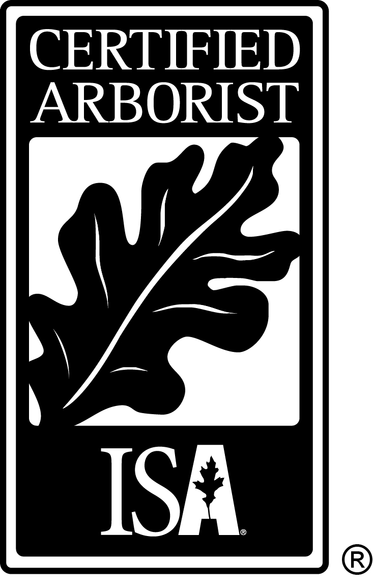

Our Story
Our family has served the Central Coast and its trees for over 75 years. Our goal is to improve the lives of our employees and clients, strengthen the communities we work for, and conserve our planet's resources and beauty.
Contractor's license: CA LIC #1036114
Certified Arborist license: WE-12338A
